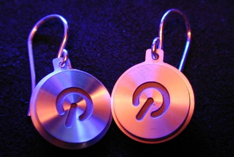

This Is What The Internet Used To Look Like
Bland pages with sporadic imagery was the norm for this “global, electronic mall that is underconstruction.” Those were the days.

Bland pages with sporadic imagery was the norm for this “global, electronic mall that is underconstruction.” Those were the days.
For he goes birling down a-down the white water That’s where the log driver learns to step lightly It’s birling down, a-down white water A log driver’s waltz pleases girls completely.
Apparently this is a nostalgic hit in Canada though from the chorus above, it sounds like it was a rough Japanese translation.

I asked my girlfriend Kristina if she wanted these and she replied “I don’t think so” with a shrug. I guess she just isn’t a geek even though she is always hoarding my PowerBook!
For those who need to know how web popular they are on a scale of 1-10 will love the Online Identity Calculator (beta) from CareerDistinction.com.
Before you rush on over there and begin filling out the form I will cut straight to the chase — this quiz just asks you to Google yourself and provide some basic job info. Hmm… a company that is all about careers trying to collect necessary info for their job in exchange for a meaningless quiz? Sounds fishy.
P.S. I got a 7.5/10!
Who is Randall Bennet? Why my fellow DV Guru blogger and this weekend he was on MSNBC to talk about the iPhone. It’s weird seeing a friend on a national news channel especially since we use to do a semi-regular podcast together. Oh well, I’m glad to see Randall hitting it big and still blogging for a living. Keep it up buddy!
Create your own at The Simpsons Movie website (look along the top for a “Create Your Simpsons Avatar” link). If you do make one, post a link to it in the comments.
Man, this thing is just as much fun as creating a Mii on the Wii.
Remember seeing this album cover everywhere in the 90’s?

Well meet the naked baby himself, Spencer Elden, now 17.

From the Wikipedia article about him:
Nirvana considered using a stock photograph of a swimming baby, but when that proved too expensive, they hired photographer Kirk Weddle. Weddle’s friends, Renata and Rick Elden, allowed their son Spencer to be photographed for about $200. The hook, line, and dollar were superimposed later. After seeing the photo, Kurt Cobain (Nirvana’s lead singer) and his wife Courtney Love agreed that they would take Spencer out to dinner when he got older.
(via Paxton Land)
I’m a right clicka and a PowerBook flippa. Best line goes to the Mac for “Pay attention, I’ve got a new invention. Steal your next idea at the MacWorld convention.”
The future is here, and this time it’s not an iPhone… It’s a big ass table! Take that Apple.
I ordered RAM for my 12″ PowerBook from Crucial.com and I am tracking the package via iSnoot.net. The interface is dead simple with one field to enter your UPS, FedEx, USPS, or DHL/AirBorne tracking number. From there, iSnoot automatically determines the carrier and displays the past scans of your package, even displaying a Google map of where your package has traveled. To stay up to date on your shipment an RSS feed is automatically generated as well.

Hopefully my RAM will get here today or tomorrow so I can stop seeing the pin wheel of death every time I switch an application.